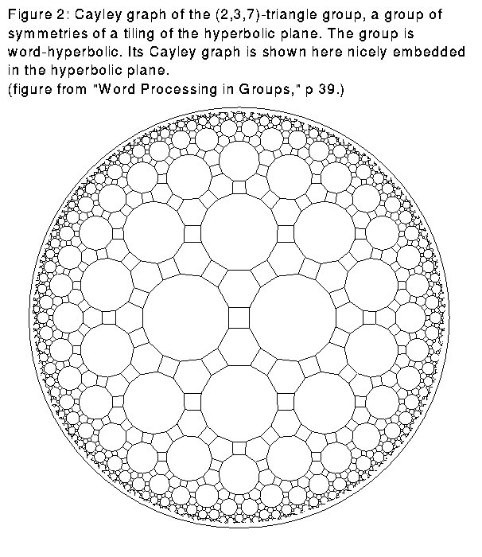

One of the first things a group theorist would like to know about a group element is whether it is the identity element. When the group is a finitely generated group given in terms of generators and relations, the question is known as the word problem. Namely, the word problem asks if there is an algorithmic method to decide whether an element given in terms of a product of generators is the identity. Though this seems like a simple request, it is not possible to solve the word problem in general. Thus it is difficult to study finitely generated groups, since the above result implies that in general one cannot tell whether two given products of generators represent the same element.
In some recent research in computational group theory, J. Cannon, W. Thurston, and D. Epstein were able to define a large class of groups for which it is possible to solve the word problem. Groups of this class are called automatic groups. Not only is it possible to solve the word problem for automatic groups, but by representing an automatic group by a special automatic structure, it is possible to solve the word problem in an efficient manner.
The concept of an automatic structure is not abstract; Epstein, S. Rees, and D. Holt have written software which inputs a set of generators and relations of a group and, when the group is automatic, gives back an automatic structure.
Automatic groups are based on the computer scientists' concept of finite state automata. Briefly, a finite state automaton uses an algorithmic method to determine whether objects called "words" have particular properties by looking at their components, called "letters." The automaton reads a word one letter at a time. After reading a letter, of which there are only a finite number, the automaton records that it is in a certain one of a finite number of "states." At any time, the only information the automaton knows is what state it is in. This state and the next letter read entirely determine the state the automaton goes to next. The state may be an "accept" state. This means that the word that led to this state has the desired property. If the automaton does not reach an accept state before it finishes reading all the letters in a word, then the automaton rejects the word. This means the word does not have the desired property. Note that since there are only a finite number of states in the automaton, it only takes a finite amount of information to determine whether to accept a given word. Thus even though there might be an infinite number of words, an automaton guarantees that a for one word, a property is determined in a finite amount of time using a finite amount of information.
In the context of groups, the words in a finite state automaton are products of generators of the group, and the generators themselves are the letters. Note that two words can represent the same group element. For example, assuming that all elements of a finite group are generators, for any x in the group, the identity word and the word (x)(x^(-1)) represent the same group element. One possible group automaton is one which accepts a word only when it is a representation of the identity element. Since an automaton rejects or accepts words in a finite amount of time, whenever such an automaton exists, it is possible to solve the word problem.
An automatic group is one with three kinds of associated finite state automata. They are a word acceptor, which determines whether a representation is in reduced form, an equality recognizer, which decides if two words are equal, and a multiplier for each generator, which determines whether a word is equal to a second word times the generator. By the second type of automata, we know that automatic groups solve the word problem. Although the existence of these three kinds of automata sounds like a stringent condition, many important groups are automatic.
Two examples of automatic groups are Euclidean groups, meaning discrete groups of isometries of Euclidean spaces, and word-hyperbolic groups. In order to define word-hyperbolic groups, we need to discuss Cayley graphs; the Cayley graph is a graph with a point for each element of the group and with a directed line from one point to a second point whenever the second element is the first element times one of the generators. For example, Figure 1 shows Cayley graphs for the two distinct four element groups. A path in a Cayley graph is a series of lines that match start to end; a path corresponds to multiplication by a series of generators. The length of a path is the number of lines making up the path; path length corresponds to the number of generators in the product. The distance between two points on the Cayley graph is the length of the shortest path between the two points.
A word-hyperbolic group is one whose Cayley graph has the following property: given a triangle with edges of shortest possible length to still join the vertices, the distance from a point on one edge to the union of the other two edges is bounded by some constant. For example, any group for which the Cayley graph can be embedded nicely in the hyperbolic plane is a word-hyperbolic group. See Figure 2.

Aside from the word problem, the automatic structure of a group allows people to quickly and efficiently draw a variety of geometric objects. For example, see Figure 3, figures from a recent paper by Greg McShane, John Parker, and Ian Redfern. Some of the scenes in the Geometry Center movie "Not Knot" were made using automatic groups. I asked Charlie Gunn, the movie's technical director, what he thought of them: "The use of automatic groups can provide significant acceleration when providing large lists of group elements. For example, the Geometry Center poster depicting the a frame from the fly-through of hyperbolic space from 'Not Knot' used a list of over 100,000 group elements; this list took only a few minutes to compute with the automatic structure. Without automatic groups, the same list would require hours of computation. Another advantage of automatic structure is extremely low memory requirements; without it the full list of group elements must be kept, as matrices, in memory throughout the computation."
Click to see Figure 3: The limit set of the group < z -> z+2 , z -> mu + 1/z > where mu = 0.06469 + 1.912 i. The cosets of the stabiliser of the real line are enumerated using an automaton. This enables us to draw each image of the real line under the group exactly once. (Figure 1a in paper below.)
This article is based on interviews with David Epstein and Silvio Levy, technical director of the Center, as well as referring to their book, written at the Center:
D.B.A. Epstein, J.W. Cannon, D.F. Holt, S.V.F. Levy, M.S. Paterson, W.P. Thurston, "Word Processing in Groups," Jones and Bartlett Publishers, Boston, 1992.
Greg McShane, John R. Parker and Ian Redfern, "Drawing limit sets of Kleinian groups using finite state automata" Warwick Preprint, number 24/1994.
![[HOME]](automaticgroups_files/home.gif) The Geometry Center Home Page
The Geometry Center Home Page
Comments to:
webmaster@www.geom.uiuc.edu
Created: March 15 1995 ---
Last modified: Jun 18 1996